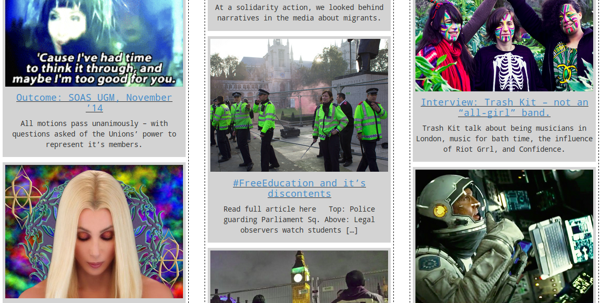

Github Codewars freeCodeCamp Image credits
I’m Ed. I'm 26 and I live in London. I work in a gallery as an invigilator and as a chef in a pub kitchen. I would like to join the Founders and Coders course to pursue a career in web design and development. I’ve been teaching myself to code on and off for four years or so, alongside working full time. I have encountered quite a few challenges along the way, but have also taken satisfaction in attempts to solve them, or learn something from them.
>
Some solutions, some challenges:
-
A website I made so that people could find their AGMs for the CLP elections, to encourage democratic participation. Used JSON lookups to help people find their nearest branch with their postcode. If you're checking out the website, use the postcode SE14 5TT.
-

A news site I made a Wordpress theme from scratch for, in order to compete with our college's print-only student newspaper, and to provide current, relevant news to students.
I like the excitement of finding a problem to solve and the challenge of creating a solution. I have found fulfillment through making computers do things; often specifically with the internet.
I am interested in contributing to that movement of the internet that produces tools, communications and technologies that are accessible and help us effect change in our everyday lives.
>
-
Through effective and neutral design, gov.uk is a useful portal for citizens -- it’s design is rock solid, tactile, and responsive. It’s an example of excellent UI/UX that helps people better access the services to which they are entitled. There are many problems with its implementation, but the fundamental principle of bringing state services under under one streamlined interface is a good one.
-
A landmark tool that provided a tangible benefit and change in the right place and time. Tens of thousands of people used Momentum’s app to find campaign targets to go to in the general election and their organisation changed the course of that vote - and potentially millions of people’s lives - for the better.
-
I came across Heath Bunting’s work in my early 20s. Bunting saw the internet as providing a liberating, anarchic insurgency into everyday life. It’s a work -- and a world, a certain set of technologies, a point of opportunity -- that we have left far behind.
I believe that creativity and good design can simplify problems, and provide some solutions. But I am always aware that design is only an interface power and the infrastructure of the internet.
In the 19th century mass printing put the written word at the disposal of ordinary people for the first time. It paved the way to a revolution that altered our economy, society and the people who built them. It made our lives better, and at the same time could be used to promote hate and misery on a scale not seen before.
Digital technology, like mass printing, has already fundamentally changed our lives, and will continue to do so. It is up to those of us who build those tools, who fix the infrastructure of everyday life, to make sure it is a force that brings us together, rather than divides us.
I want to use creativity and good design to simplify our problems when it helps and to make tools that work at a human scale when needed.